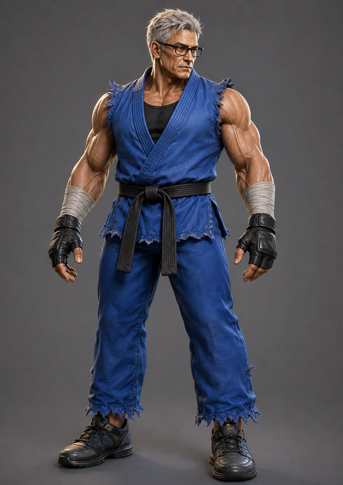
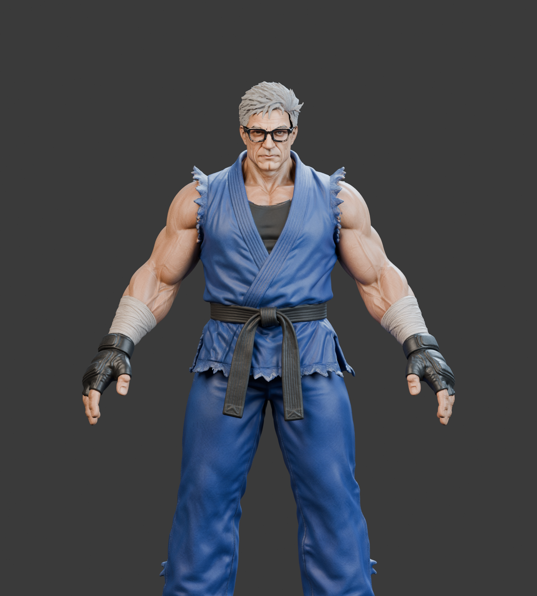

The approved picture is the target. The model panel is an actual Blender render. The model panel shows the current geometry before animation, with studio lighting. Both renders include the current glasses materials; Jez also includes the replacement hair. The game adds fabric shading that is not shown in these studio renders. These are different poses and crops; zoom and scroll each image to inspect matching features. The models are still below the target.


Compare facial likeness and glasses; skin and hair detail; fabric weave and seams; and the construction of the gloves and fingers. More pixels or added texture do not resolve inaccurate shapes.